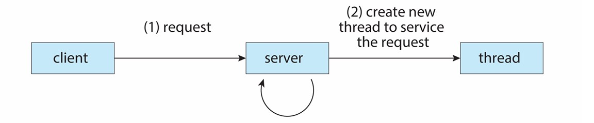

Chapter12 Threads 线程
12.1 基本概念
线程是一个进程的执行单元。
每个线程有自己的：
- 线程ID
- PC程序计数器
- 寄存器组相关信息
- 运行时栈（因为栈中有变量和函数链，每个线程调用的函数不一样）
在同一进程中，所有的线程共享：
- code section
- data section
- 运行时堆
- open files和signals
线程具有cocurrency 并发性，即对于一个多线程的进程，这些线程可以同时开始执行任务。

Advantages of Threads 线程的优点：
Economy：
- 创建线程比创建进程更加轻量级，因为所有的资源都已经位于内存中，只需要新开一个栈即可
- 线程的上下文切换也比进程更加轻量级，因为大量数据不变，所以没有cache flush缓存刷新
Resource Sharing：
- 线程自然而然地共享内存，不需要IPC
- 线程有利于并行（但也会带来一定风险）
Responsiveness：
- 程序如果有并行的线程会有更好的响应，一个线程在等待事件的同时另一线程可以工作。例如，在client-server中，可以创建一个线程来响应用户的请求，其他线程来处理其他任务。
- 对于进程来说虽然也有较好的响应，但线程的economy和resource sharing更优

Scalability
Drawbacks of Threads 线程的缺点：
- 线程之间缺少隔离，一旦一个线程挂掉，其他线程乃至整个进程都有可能挂掉
- 线程可能受到比进程更严格的内存限制，因为每个进程分到的内存空间有限，因此线程之间的内存约束就更加严格
- 同步比较困难
12.2 User Threads and Kernel Threads 用户线程和内核线程
用户线程可以在user space实现，不需要内核的直接支持，由某些用户级线程库进行管理；内核线程由内核进行管理，内核具有处理线程的数据结构和功能。
事实上，Linux对进程和线程不作过多区分，其使用相同的数据结构。
Many-to-One Model 多对一模型：

多个用户线程映射到一个内核线程，主要在user space实现。
优点：
内核简单，user space的多线程效率高，开销低，无需syscall（线程管理在user space进行）
缺点：
- 由于所有用户线程映射到一个内核线程，因此整个进程只能在一个核心上运行，无法利用多核架构
- 一个线程阻塞后，其他线程也会阻塞
例子：
- Java Green Threads
- GNU Portable Threads
One-to-One Model 一对一模型：
优点：
解决了many-to-one model的缺点
缺点：
创建新的线程需要内核参与，没有many-to-one model快，且占用更多资源
例子：
- Linux
- Windows
- Solaris 9 and later
Many-to-Many Model 多对多模型：

当一个用户线程阻塞时，内核可以创建一个新的内核进程避免其他线程的阻塞。
创建新的用户线程并不一定要创建新的内核线程。
在多核机器上可以实现并行。
优点：
解决了many-to-one model和one-to-one的缺点
缺点：
过于复杂
例子：
- Solaris 9 and earlier
- Win NT/2000 with the ThreadFiber package
Two-Level Model 两级模型：

可以是many-to-many model，但如果一个用户线程比较重要，可以将其设置为one-to-one model。
例子：
- IRIX, HP-UX, Tru64 UNIX
- Solaris 8 and earlier
Thread Libraries 线程库：
线程库允许用户在自己的程序中创建并使用线程。
- Pthreads and Win32 threads：用于C/C++，由内核实现
- OpenMP：用于C/C++，在Pthreads上层
- Java Threads：用于Java，由JVM实现（依赖于内核实现的线程）
Semantics of fork and exec：
当一个线程调用folk时，有以下两种可能：
- 创建一个新的进程，只包含一个线程（即parent线程的复制）
- 创建一个新的进程，包含了parent线程所在进程的所有线程
有些OS对于以上两种方案都有提供，但Linux使用第一种方案。
当一个线程调用exec时，该线程所在进程下的所有线程都会清空（只留下单线程）。
Signals：
对于一个多线程的进程，当其接收到signal时，会有以下选择：
- 将signal传递给适用的线程
- 将signal传递给所有线程
- 将signal传递给特定的线程
- 安排一个特殊的线程来接收所有signal
在大多数Unix版本中，一个线程可以决定接收哪些signal。Linux的实现是用户自己选择设置。
Safe Thread Cancellation 安全取消线程：
取消一个线程有两种可能的方法：
- asynchronous cancellation 异步取消： 由其他的线程来即时取消该进程，但该进程正在执行时被取消可能会有同步问题
- deferred cancellation 延迟取消： 该线程每隔一段时间检查自己是否应该被取消，直到合适的时机（cancellation point），但问题是比较笨拙
通常默认的方式是deferred，涉及cleanup handler，在Linux上通过signal处理。
Thread Scheduling 线程调度：
当OS支持线程时，只进行线程调度，而不考虑进程调度。
线程调度分为：
- process-contention scope (PCS)： 在进程内部对线程进行调度
- system-contention scope (SCS)： 系统下所有线程一起参与调度（Linux使用）
Windows Threads：
Windows的每个线程都包含自己的ID，寄存器组数据，运行时栈（分user mode和kernel mode），专有数据存储区域（供实时库和动态链接使用），这些被称为一个线程的context。
线程的数据结构包含：
- ETHREAD（executive thread block）： 位于kernel space，包括所属进程的指针和指向KTHREAD的指针
- KTHREAD（kernel thread block）： 位于kernel space，包括调度信息，同步信息，kernel node的栈和指向TEB的指针
- TEB（thread environment block）： 位于user space，包括线程ID，user mode的栈和相关存储数据

Linux Threads：
在Linux中，一个线程也被叫做一个light-weight process（LWP）。
Linux使用clone系统调用来创建线程或者进程，child与parent共享执行信息。（folk和exec是Unix系列都有的，而clone是Linux特有的）
folk的线程被放到ready queue，被调度后执行，clone的线程同理。
Linux中不区分PCB和TCB，统一使用task_struct，跟每个线程对应，进程用leader线程的task_struct，且进程和leader线程的ID一致。
thread_group（一种list head）可以遍历一个进程中的所有线程。先从thread_group找到next（thread_group.next），减去偏移量后到达另一个线程的task_struct。
在Linux中，一个进程对应的线程共享一个mm_struct（进程在内存中的信息）。